Etapa 4
Nesta etapa é possível selecionar a origem dos dados para considerar no cálculo do MRP, mais as configurações que serão consideradas durante a execução do mesmo.
Fontes de demanda e fornecimento a serem incluída no cálculo do MRP
Vários documentos podem ser selecionados para servirem de fontes de demanda e fornecimento durante a execução do MRP, para isso basta selecionar o flag do documento desejado e realizar a execução do MRP.
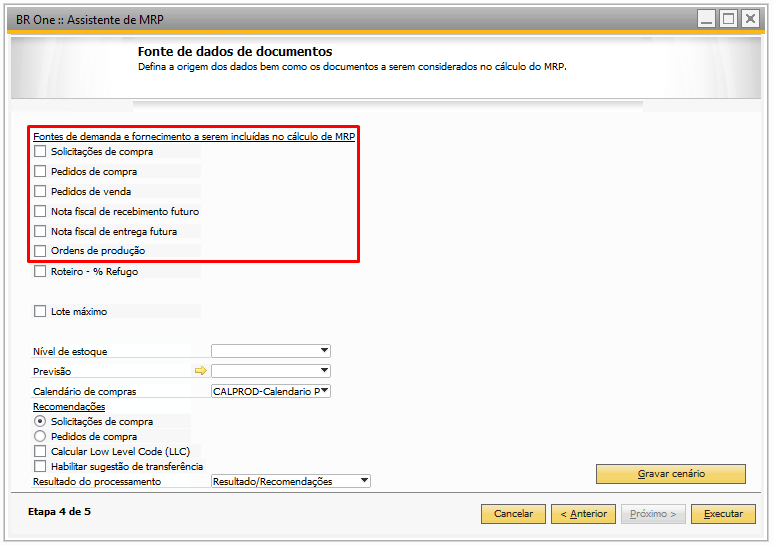{kind=link}
Com isso apenas os documentos selecionados serão considerados nos cálculos realizados pelo MRP, retornando assim os resultados e recomendações apenas para os documentos escolhidos.
Solicitações de compra
Esse documento é validado com base nos fornecimentos dentro do período selecionado e depósitos que estão sendo validados na etapa 3 com a flag com fornecimento selecionado.
Para visualizar os fornecimentos encontrados de solicitação de compra, é possível através da aba resultado na linha de fornecimento, dar um duplo clique e validar os documentos de fornecimentos.
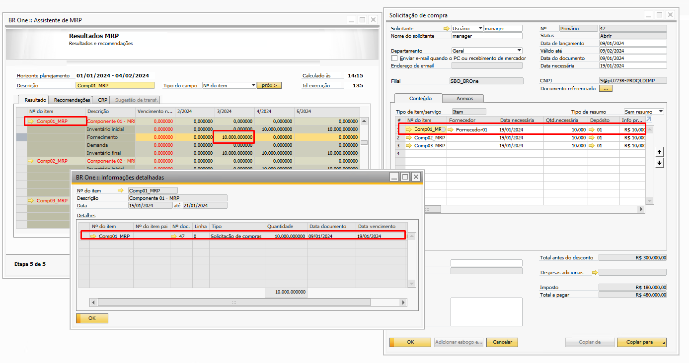{kind=link}
Pedido de compra
Esse documento é validado com base nos fornecimentos dentro do período selecionado e depósitos que estão sendo validados na etapa 3 com a flag com fornecimento selecionado.
Para visualizar os fornecimentos encontrados de pedido de compra, é possível através da aba resultado na linha de fornecimento, dar um duplo clique e validar os documentos de fornecimentos.
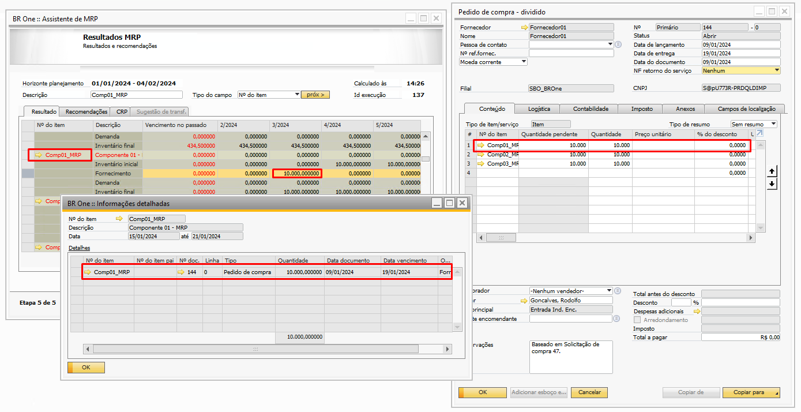{kind=link}
Pedido de venda
Esse documento é validado com base nas demandas dentro do período selecionado e depósitos que estão sendo validados na etapa 3 com a flag com demanda selecionada.
Para visualizar as demandas encontradas de pedido de venda, é possível através da aba resultado na linha de demanda, dar um duplo clique e validar os documentos de demanda, ou na aba recomendações, com um duplo clique na linha ref..
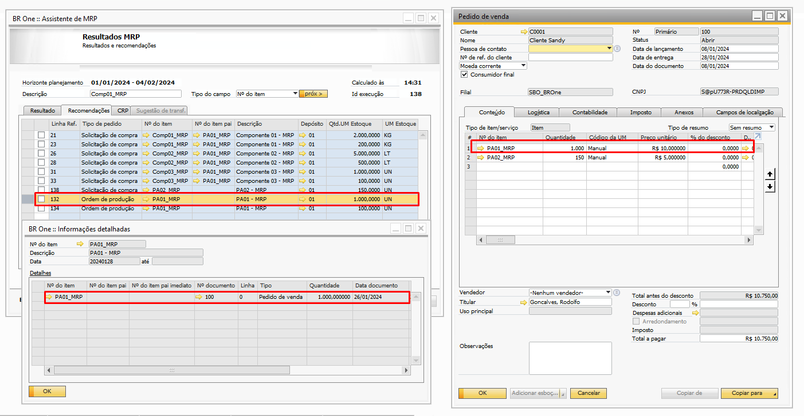{kind=link}
Nota fiscal de recebimento futuro
Esse documento é validado com base nos fornecimentos dentro do período selecionado e depósitos que estão sendo validados na etapa 3 com a flag em fornecimento selecionado.
Para visualizar os fornecimentos encontrados de Nota fiscal de recebimento futuro, é possível através da aba resultado na linha de fornecimento, dar um duplo clique e validar os documentos de fornecimentos.
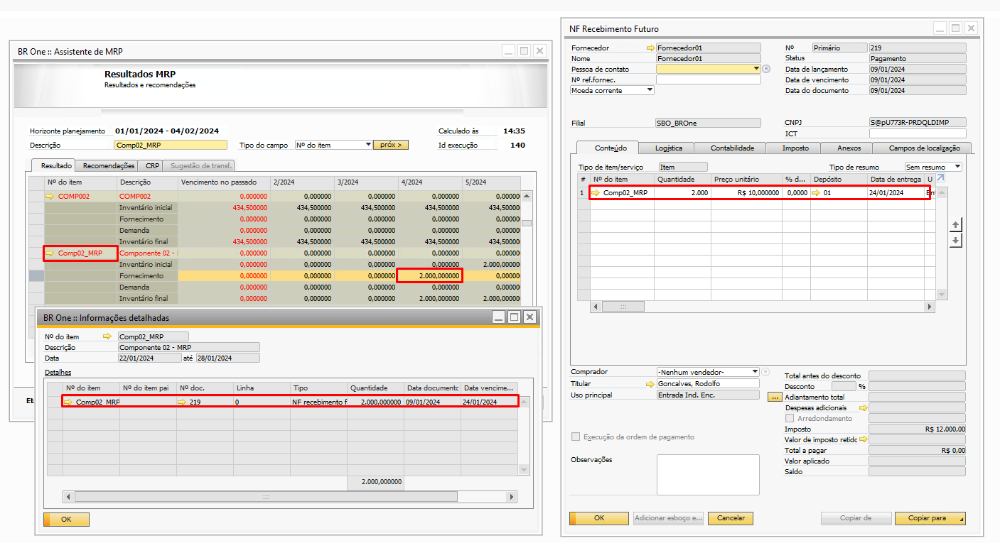{kind=link}
Nota fiscal de entrega futura
Esse documento é validado com base nas demandas dentro do período selecionado e depósitos que estão sendo validados na etapa 3 com a flag com demanda selecionada.
Para visualizar as demandas encontradas de Nota fiscal de entrega futura, é possível através da aba resultado na linha de demanda, dar um duplo clique e validar os documentos de demanda, ou na aba recomendações, com um duplo clique na linha ref..
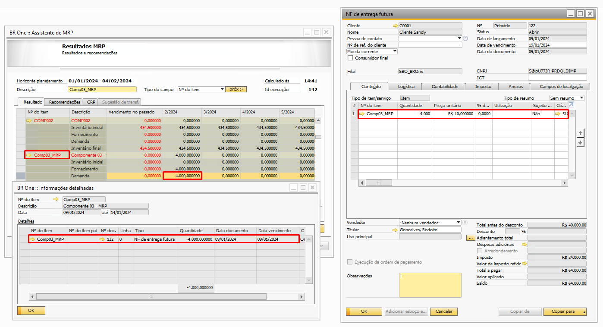{kind=link}
Ordem de produção
Esse documento é validado com base nas demandas e fornecimentos dentro do período selecionado e depósitos que estão sendo validados na etapa 3 com a flag com demanda ou/e com fornecimento selecionados.
Para visualizar as demandas/fornecimentos encontrados de ordens de produção, é possível através da aba resultado na linha de demanda/fornecimento, dar um duplo clique e validar os documentos de demanda, ou na aba recomendações, com um duplo clique na linha ref..
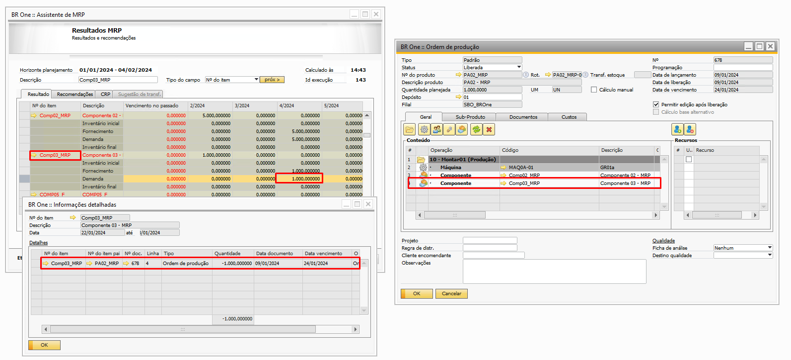{kind=link}
É possível também marcar mais de um documento, por exemplo, caso o usuário queira que somente os documentos oriundos de ‘Pedidos de venda’ e ‘Ordens de produção’ sejam levados em consideração pelo MRP, deverá selecionar os dois flags e realizar a execução, como vemos abaixo.
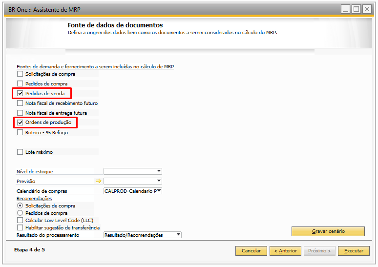{kind=link}
Conforme dito acima, o MRP irá realizar os cálculos e retornar os resultados e recomendações, considerando apenas as fontes de demanda e fornecimento selecionado, veja abaixo.
Recomendação de compra baseada em uma ordem de produção:
{kind=link}
Recomendação de compra baseada em um pedido de venda:
{kind=link}
Roteiro - % Refugo
Esta configuração interfere no cálculo da aba ‘Resultado’, quando marcado é acrescentado um valor calculado conforme configurado no campo ‘% refugo’ do roteiro.
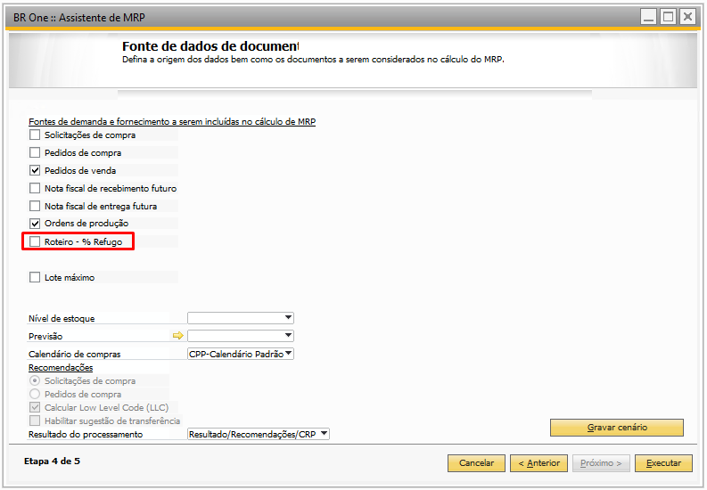{kind=link}
Dessa forma, quando este flag está marcado, o cálculo do MRP acrescenta essa porcentagem configurada no cálculo para todos os itens referente a esse roteiro.
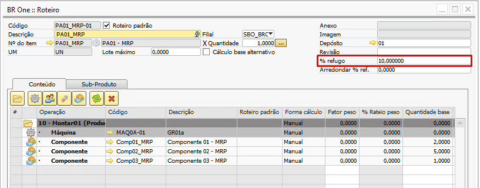{kind=link}
Exemplo de quando o flag está desmarcado:
Ao executarmos o MRP com o parâmetro desmarcado, o campo ‘% refugo’ do roteiro não será considerado para o cálculo, portanto o cálculo realizado para definir as quantidades é realizado através da equação abaixo:
Qtde a ser produzida de cada item = Qtde recomendada MRP / Qtde Roteiro
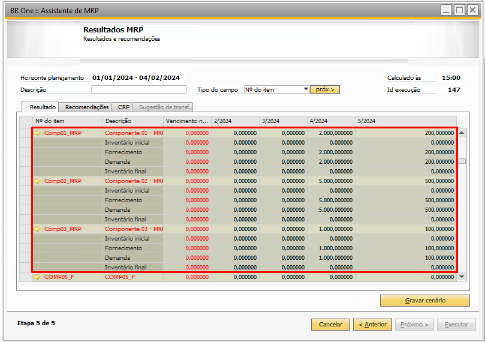{kind=link}
Exemplo de quando o flag está marcado:
Ao executarmos o MRP com o parâmetro marcado, o campo ‘% refugo’ do roteiro será considerado para o cálculo, portanto o cálculo realizado para definir as quantidades é realizado através da equação abaixo:
Qtde recomendada MRP = Qtde recomendada MRP anteriormente * porcentagem do refugo
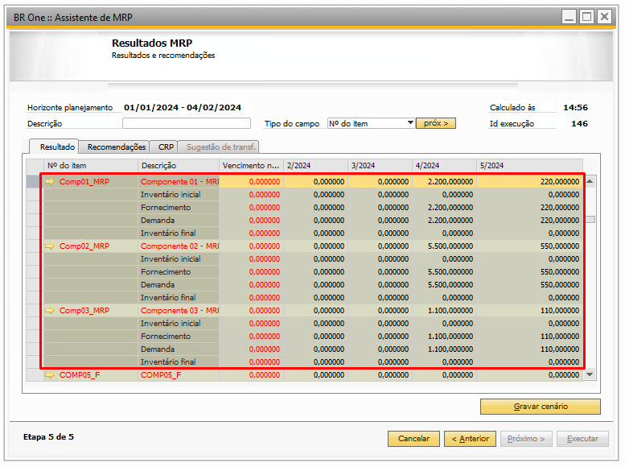{kind=link}
Comparando os resultados acima, pode-se ver que o MRP acrescentou 10% em todas as quantidades referentes a esse roteiro quando o flag está marcado.
Lote máximo
A configuração ‘Lote máximo’ determina se será considerado o lote máximo para a execução do MRP. Ele levará em consideração o campo ‘Lote máximo’ do ‘Roteiro’, para produção, e do ‘Cadastro do item’, para compras.
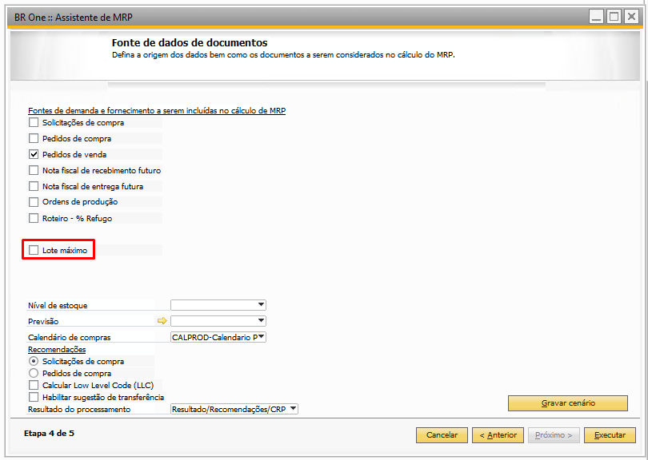{kind=link}
Quando o campo ‘Lote Máximo’ tiver valor e a flag estiver marcada no MRP, a recomendação tanto de compra quanto de produção levará em conta o lote máximo a ser comprado/produzido. Quando o campo não tiver valor, será sugerido o valor total.
Exemplo item de compra:
O item ‘Comp01_MRP’ é um item de compra e tem como lote máximo a quantidade 500 peças. Para itens cujo método de suprimento seja ‘Produzir’, o campo ‘Lote máximo’ não estará disponível.
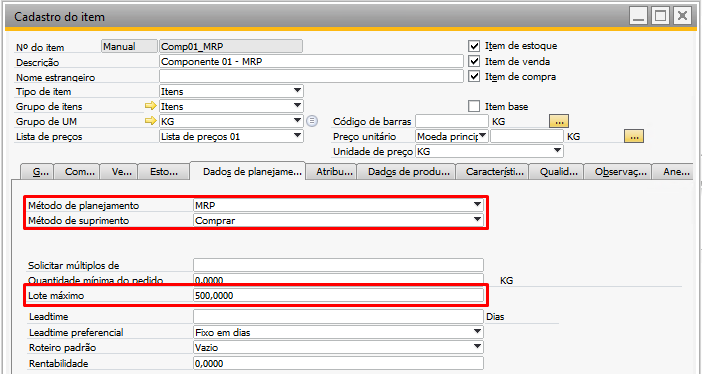{kind=link}
Ele não tem estoque disponível em nenhum depósito e possui demanda através de um ‘Pedido de vendas’ de 1.000 peças para seu PA, onde sua relação é de 2 peças para 1 peça.
Portanto, ao gerar o MRP com os flags ‘Pedido de venda’ e ‘Lote Máximo’ marcados na etapa 5, o MRP irá recomendar 4 ‘Solicitações de compra’ para o item com quantidade máxima de compra igual a 500 peças, pois essa é a quantidade configurada como lote máximo no cadastro do item.
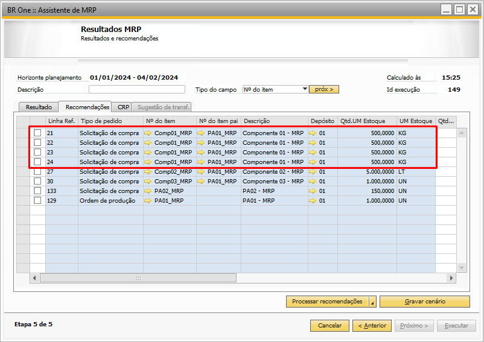{kind=link}
Exemplo item de produção:
O item ‘PA01_MRP’ tem como método de suprimento ‘Produzir’ e possui um roteiro com ‘Lote máximo’ de 250 peças, o item não possui estoque em nenhum depósito, e possui demanda através de um ‘Pedido de vendas’ de 1.000 peças.
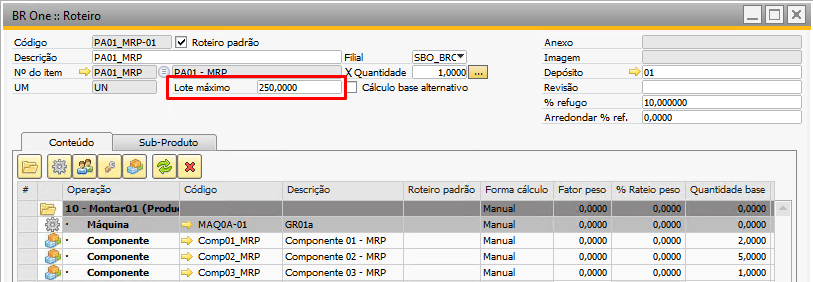{kind=link}
Portanto, ao gerar o MRP com os flags ‘Pedido de venda’ e ‘Lote Máximo’ marcados na etapa 5, o MRP irá sugerir 4 ‘Ordens de produção’ para o item com quantidade máxima de produção por OP igual a 250 peças, pois essa é a quantidade configurada como lote máximo no roteiro do item.
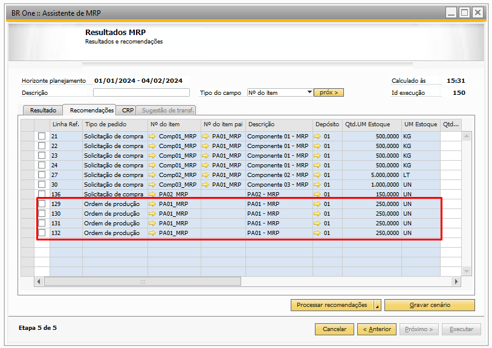{kind=link}
Nível de estoque
O campo ‘Nível de estoque’ determina se o estoque mínimo ou máximo dos depósitos deve ser levado em conta na hora de sugerir as quantidades.
Essa opção é uma demanda para que se necessário seja recomendado uma compra ou produção para determinado item.
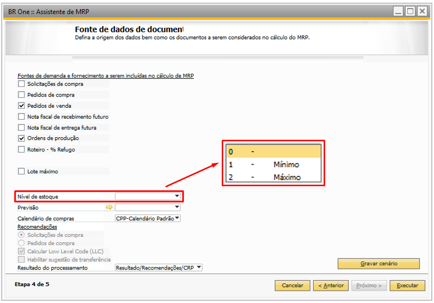{kind=link}
Para o estoque ser considerado (mínimo ou máximo), devem ser configurados alguns pontos.
O campo ‘Método de planejamento’ deve estar como MRP, ele está localizado no ‘Cadastro do Item’, aba ‘Dados de planejamento’.
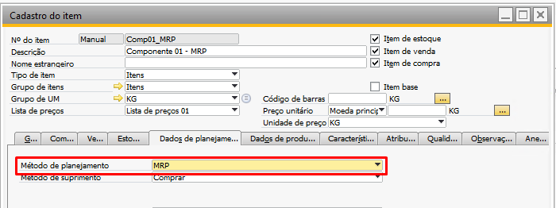{kind=link}
Na imagem abaixo podemos ver um exemplo de estoque mínimo e máximo:
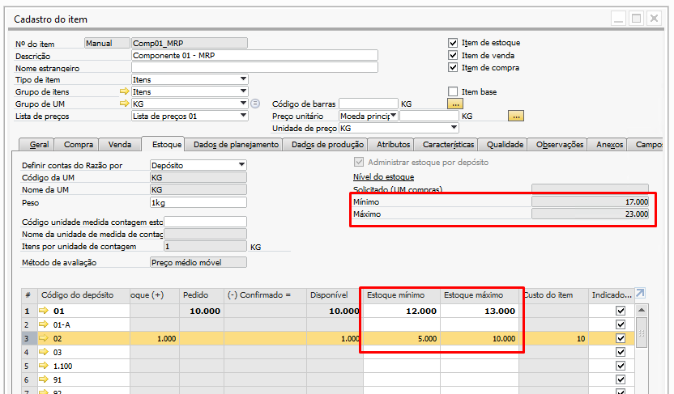{kind=link}
Os depósitos 01 e 02 possuem 12.000 e 5.000 de estoque mínimo, respectivamente, no campo ‘Mínimo’ será exibida a soma destes valores, totalizando 17.000.
Os depósitos 01 e 02 possuem 13.000 e 19.000 de estoque máximo, respectivamente, no campo ‘Máximo’ será exibida a soma destes valores, totalizando 23.000.
Quando estiver marcado no MRP a opção nível de estoque mínimo ou máximo, caso a execução seja ‘por Empresa’, serão somadas as demandas de ‘Estoque Mínimo’ ou ‘Estoque Máximo’ e desconsideradas as quantidades em ‘Estoque’ dos depósitos selecionados, e sugerido (recomendado) a diferença de acordo com as regras:
Base 1 Filial (Multi-filial desativado)
Em caso de recomendação para atender estoque mínimo, será considerado o depósito padrão do item.
Em caso de recomendação para atender estoque mínimo, caso não exista o depósito padrão no item, será utilizado o depósito padrão da empresa.
Base Multi-filial (Multi-filial ativado)
Em caso de recomendação para atender estoque mínimo, será considerado o depósito padrão do item se for da mesma filial logada, caso não seja multi-filial, será utilizado o depósito configurado na tela Configurações de depósitos para referência.
Em caso de recomendação para atender estoque mínimo, caso não exista o depósito padrão no item, será utilizado o depósito padrão da filial logada.
Exemplo de recomendação do MRP com nível de estoque mínimo:
O item Comp01_MRP possui um estoque mínimo de 5.000 peças e 1.000 peças disponíveis para o depósito 02:
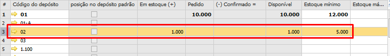{kind=link}
Ao selecionar uma fonte de demanda e marcar o campo nível de estoque como mínimo, ao executar o MRP, será recomendado a compra de mais 4.000 peças, a fim de, justamente, atender a configuração de nível de estoque.
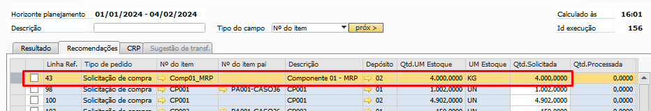{kind=link}
Exemplo de recomendação do MRP com nível de estoque máximo:
O item Comp01_MRP possui um estoque máximo de 10.000 peças e 1.000 peças disponíveis para o depósito 02:
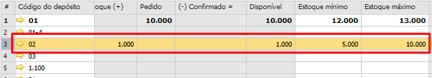{kind=link}
Ao selecionar uma fonte de demanda e marcar o campo nível de estoque como máximo, ao executar o MRP, será recomendado a compra de mais 9.000 peças, a fim de, justamente, atender a configuração de nível de estoque.
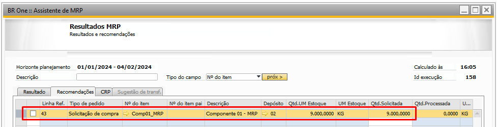{kind=link}
Previsão
O MRP também permite ao usuário selecionar uma previsão de venda, que é criada na tela ‘Previsões’ através do menu:
Menu principal -> MRP -> Previsões
No exemplo abaixo, foi criada uma previsão de venda do produto acabado PA02_MRP para os meses de janeiro, fevereiro e março com o valor 300, 500 e 700, respectivamente:
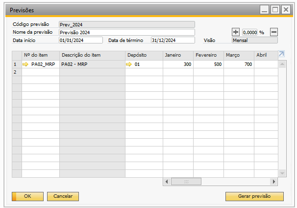{kind=link}
Ao preencher as etapas do MRP foi selecionado o depósito 01, que consta na previsão, e a previsão ‘Prev_2024’ conforme imagem abaixo:
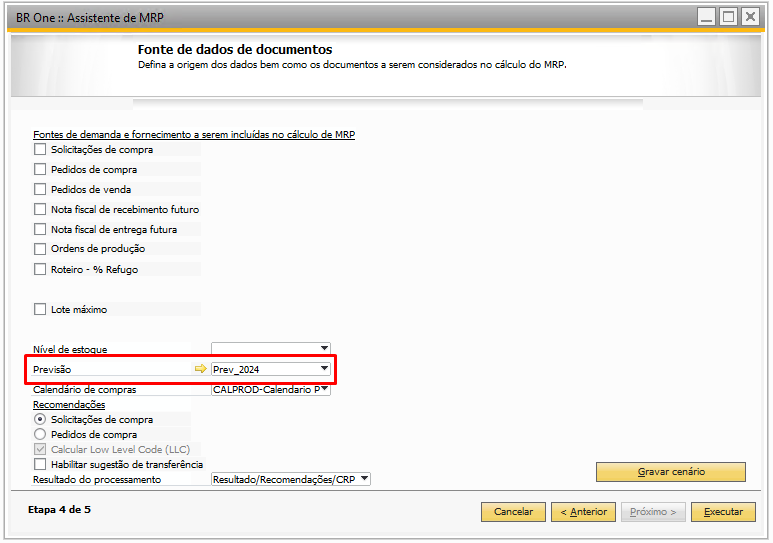{kind=link}
Ao executar o MRP, ele irá considerar as quantidades existentes na previsão ‘prev_2024’ e irá recomendar a compra dessas quantidades conforme previsão selecionada.
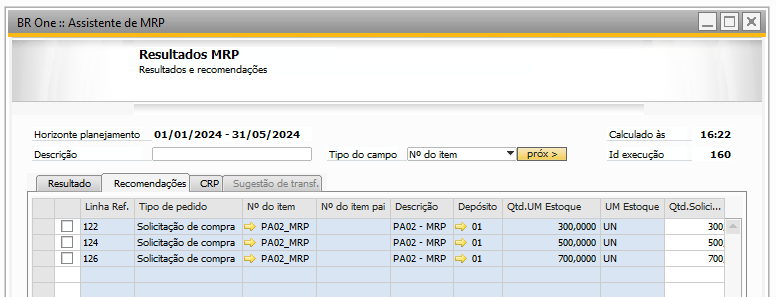{kind=link}
Calendário de compras
No campo ‘Calendário de compras’ deve ser selecionado o calendário a considerar para fazer o cálculo das datas para serem comprados os componentes da produção.
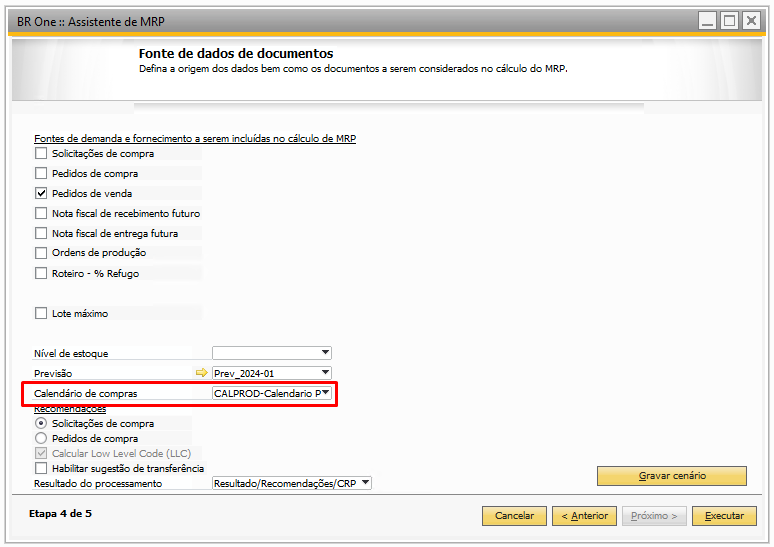{kind=link}
Ele calcula a data da compra de acordo com a data de vencimento para trás e verifica se há algum feriado ou um dia que não é de trabalho.
Por exemplo, se a data de vencimento é dia 20/01 e ele tem que ter os componentes 10 dias antes da entrega para a produção, ele calculou 10 dias a partir do dia 20 para trás, descartando os dias que não forem úteis.
Também será considerado para cálculo dos itens que não são de compra o calendário do grupo de recursos do roteiro do item, e se ele não tiver um calendário, será utilizado o calendário do centro de trabalho configurado no grupo de recursos.
Recuperação do calendário de produção
Os calendários que possuem vinculados no recurso/grupo de recurso e centro de trabalho, são essenciais para realização do cálculo do CRP.
A regra de busca dos calendários ocorre conforme ordem abaixo:
Recursos
Grupo de Recurso
Centro de Trabalho
São esses calendários que irão realizar o cálculo da data início e data término de cada operação para seus recursos.
Recomendações
O campo ‘Recomendações’ estará habilitado apenas quando a flag ‘Permitir geração de Pedido de Compras’ estiver marcada.
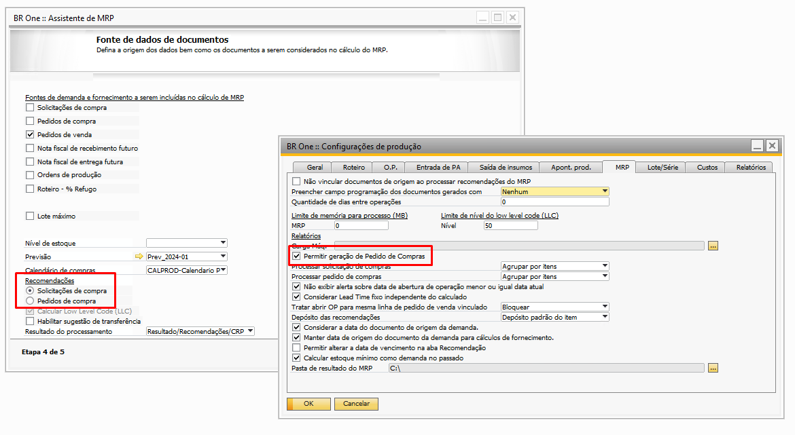{kind=link}
Quando a configuração estiver marcada, o usuário poderá escolher entre recomendar ‘Solicitação de compras’ ou ‘Pedido de compras’.
A ‘Solicitação de Compra’ será considerada como documento padrão para o processo, quando for selecionada na etapa 4:
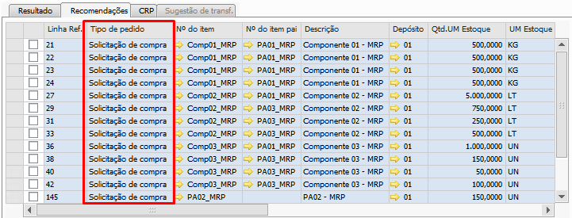{kind=link}
Quando for escolhida a opção para gerar ‘Pedidos de compra’, ele será considerado como documento padrão para o processo, é necessário também certificar-se de que o item possua um fornecedor preferencial definido, já que o pedido será criado para o mesmo.
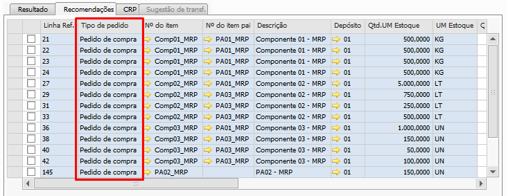{kind=link}
Caso a configuração não esteja ativa, os campos serão bloqueados e apenas ‘Solicitações de Compra’ serão recomendadas.
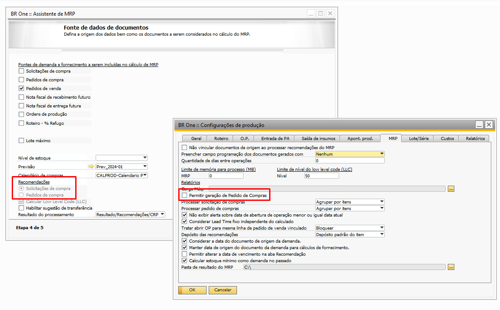{kind=link}
Calcular Low Level Code (LLC)
O campo ‘Calcular Low Level Code (LLC)’, se marcado, força o cálculo do LLC, que calcula os níveis do item nos roteiros.
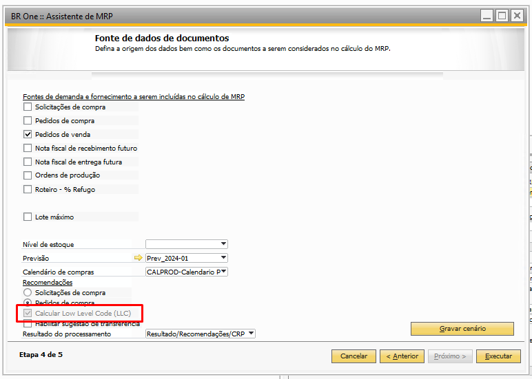{kind=link}
Se for feita alguma alteração em algum roteiro, o LLC terá que ser recalculado, então, ele virá marcado e não poderá ser desmarcado.
Habilitar sugestão de transferência
Ao marcar a opção na etapa 3 ‘Por Depósito’ esse campo será habilitado, é responsável por habilitar a aba que exibe as sugestões de transferências após a execução do MRP.
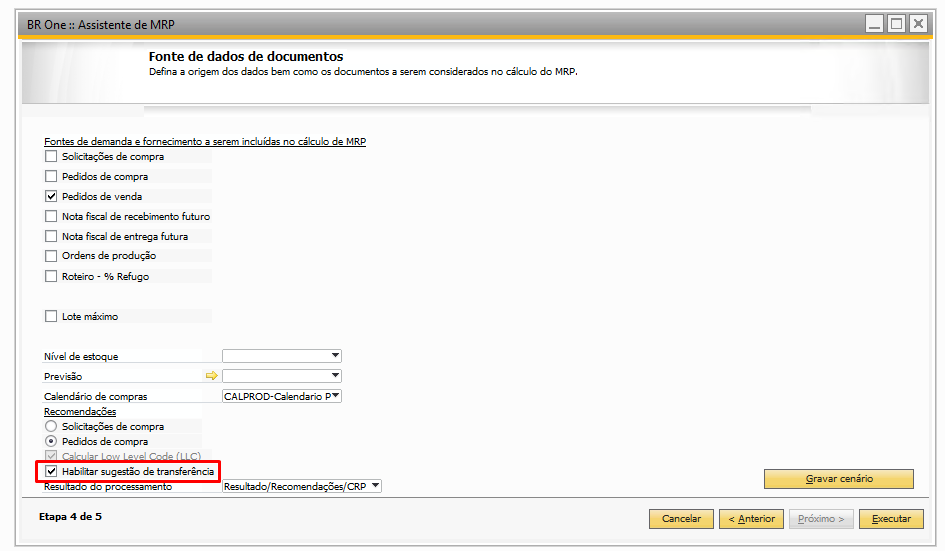{kind=link}
{kind=link}
Se o campo não for marcado, a coluna estará bloqueada.
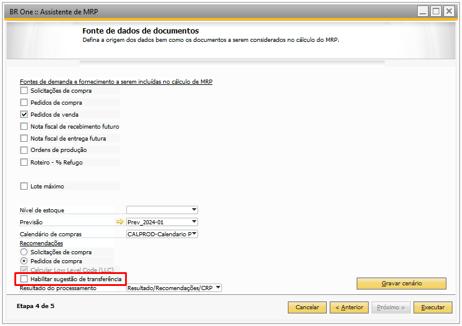{kind=link}
{kind=link}
Resultado do processamento
O campo ‘Resultado do processamento’ foi criado para que possa ser escolhido qual o resultado que é esperado para aquela execução.
Podendo ser escolhido entre ‘Resultado/Recomendações’, apenas ‘Recomendações’ ou o resultado completo com ‘Resultado/Recomendações/CRP’.
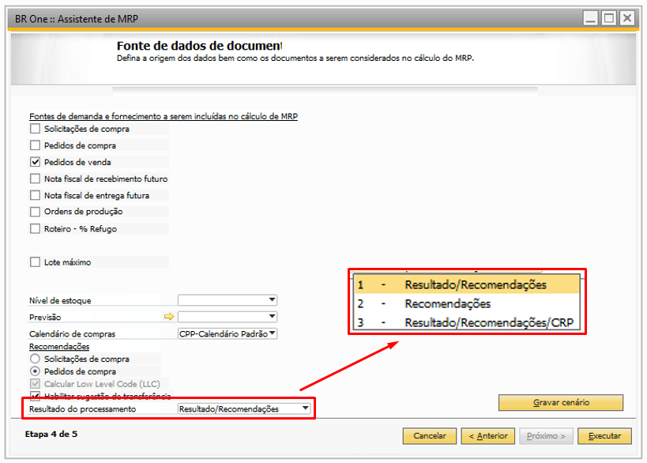{kind=link}
Exemplo de execução para a configuração ‘Resultado/Recomendações’:
Fica disponível para análise apenas as abas ‘Resultado’ e ‘Recomendações’.
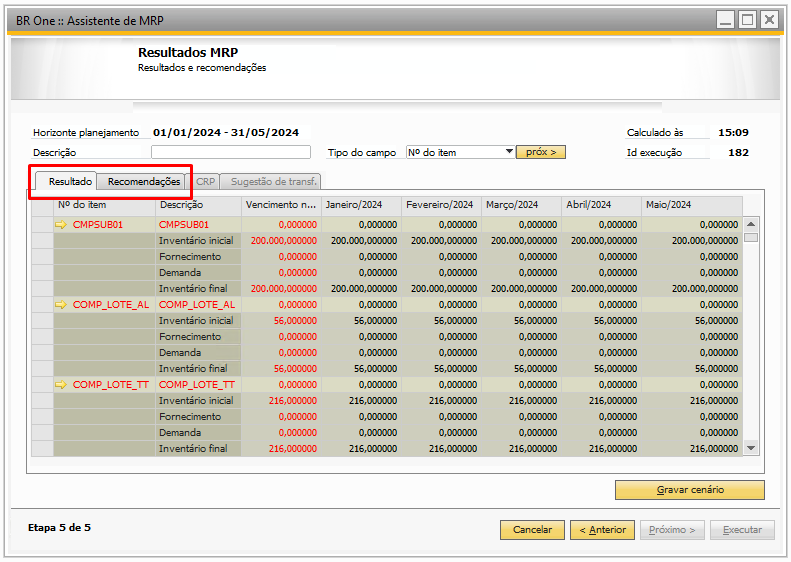{kind=link}
Exemplo de execução para a configuração ‘Recomendações’:
Fica disponível para análise apenas a aba ‘Recomendações’.
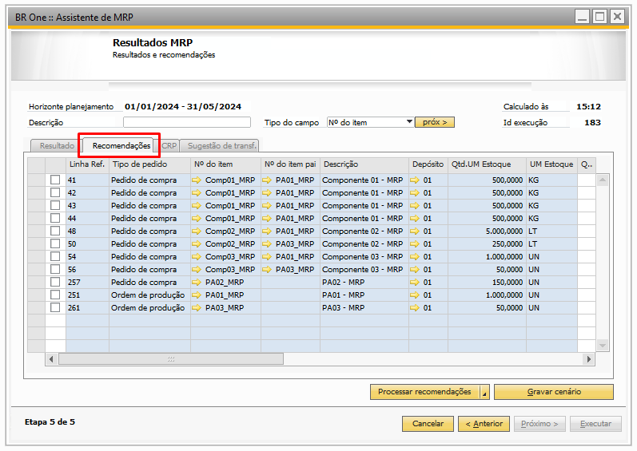{kind=link}
Exemplo de execução para a configuração ‘Resultado/Recomendações/CRP’:
Fica disponível para análise as abas ‘Resultado’, ‘Recomendações’ e ‘CRP’.
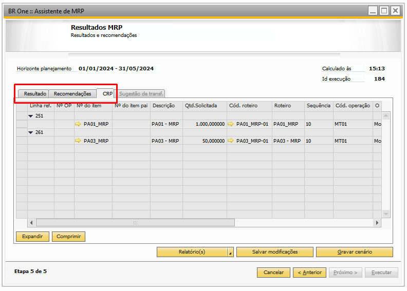{kind=link}
Após todas as configurações desejadas serem ajustadas, clique em ‘Executar’.
Se a memória configurada na tela ‘Configurações de produção’ for excedida, a seguinte mensagem de confirmação aparecerá:
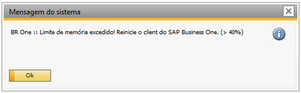{kind=link}
Limite de memória excedido! Reinicie o cliente do SAP Business One. (> xx%)
Se o usuário clicar em ‘Sim’, irá iniciar o processo de MRP, porém, o processo pode não ser concluído por falta de memória. O mais recomendado é clicar em ‘Não’ e liberar mais memória para executar o processo.
Para a execução correta do MRP, os seguintes passos devem estar devidamente configurados:
Deve haver no mínimo um cadastro de ‘Centro de trabalho’.
O ‘Centro de trabalho’. deve estar vinculado no cadastro de ‘Grupo de recurso’.
O ‘Centro de trabalho’. tem que ter um calendário vinculado.
O ‘Grupo de recurso’ tem que ter pelo menos um ‘Recurso’.
As telas abaixo indicam as várias etapas pelas quais o MRP passa durante sua execução:
Atualizando cenário.
Processando MRP.
Calculando MRP.
Carregando aba recomendações.
Carregando aba resultado.
Carregando aba CRP.
{kind=link}
O tempo de exibição de cada uma depende do tamanho do banco de dados e de todas as configurações que foram ajustadas, podendo variar muito o tempo a cada execução.
MRP em segundo plano
É possível executar o MRP em segundo plano, ao optar por essa configuração, o BROne estará disponível para utilização de outros processos enquanto o MRP é executado em segundo plano.
Para realizar a execução em segundo plano do MRP o usuário deve na etapa 4, clicar na seta do botão ‘Executar’ e selecionar a opção ‘Segundo plano’.
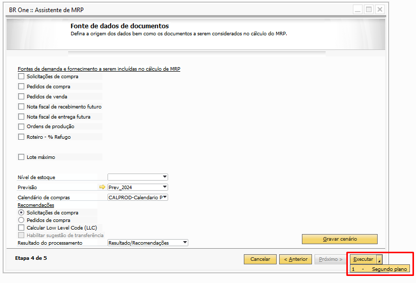{kind=link}
Ao iniciar a execução do MRP em segundo plano, o add-on irá retornar a mensagem abaixo:
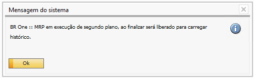{kind=link}
BR One :: MRP em execução de segundo plano, ao finalizar será liberado para carregar histórico.
Enquanto a execução em segundo plano estiver ocorrendo, e o usuário tentar abrir novamente a tela de ‘Assistente de MRP’ o add-on irá retornar a seguinte mensagem:
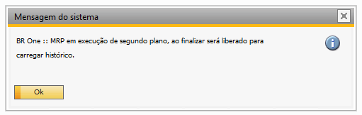{kind=link}
BR One :: MRP em execução de segundo plano, ao finalizar será liberado para carregar o histórico.
Ao clicar em ‘Ok’, será aberto a tela de ‘Assistente de MRP’, mas não será possível executar o MRP, enquanto houver uma execução em segundo plano.
Ao finalizar a execução do MRP em segundo plano, o add-on irá retornar a mensagem abaixo:
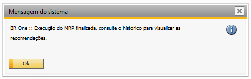{kind=link}
BR One :: Execução do MRP finalizada, consulte o histórico para visualizar as recomendações.
As recomendações da execução em segundo plano do MRP, ficarão armazenadas no histórico do cenário executado. Onde para acessar o mesmo, basta na etapa 1, selecionar o cenário executado em segundo plano e clicar no botão ‘Histórico’:
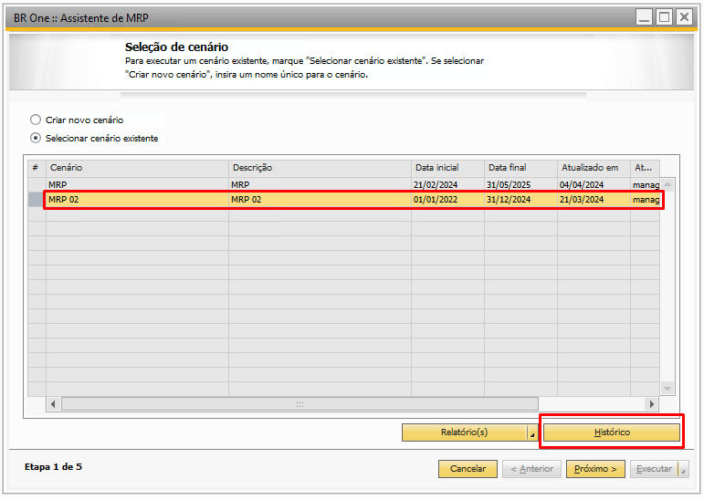{kind=link}
Com isso será aberta a tela de ‘Histórico’, onde poderá ser selecionado a execução realizada em segundo plano:
{kind=link}
Ao selecionar e clicar em ‘Ok’, o histórico será carregado, trazendo assim os resultados e recomendações do MRP:
{kind=link}
É possível verificar as execuções em segundo plano do MRP através da tela ‘Execuções em segundo plano – MRP’, nesta tela basta selecionar o status ‘Iniciado’ e filtrar através do botão. Dessa forma será retornado o processo de MRP que está sendo executado em segundo plano:
{kind=link}
Nela também é possível filtrar as execuções em segundo plano que foram finalizadas, neste caso basta selecionar o status ‘Finalizado’ e realizar o filtro através do botão. Assim será retornado todas as execuções realizadas em segundo plano:
{kind=link}